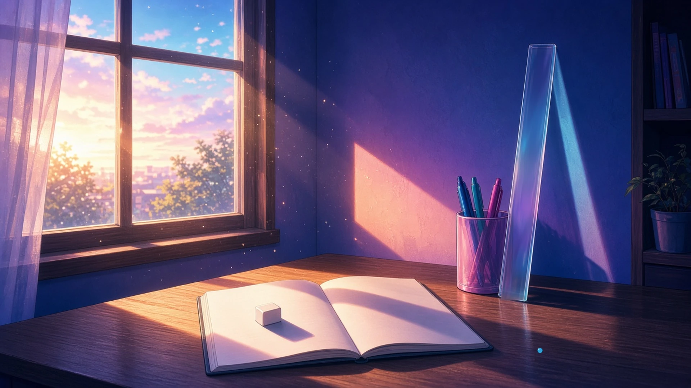
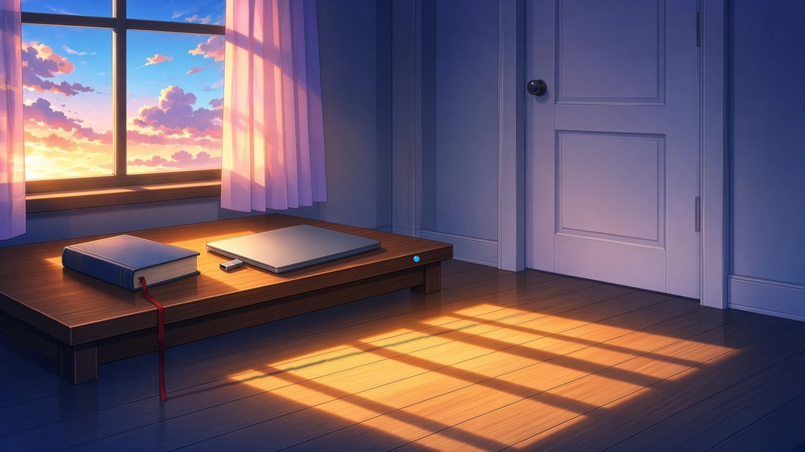
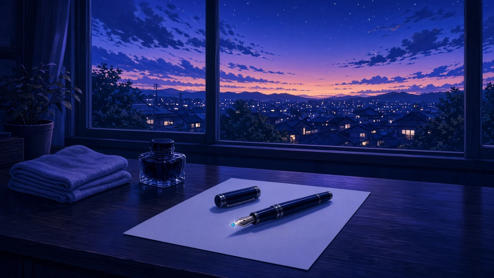

先につづきへとどいた影 — 日曜の四時、 いちばん遠くまで影をとどかせていたもの
日曜の四時、西の窓の光がだんだん低くなって、机の上の影がのびはじめたとき、いちばん遠くまで影をとどかせていたもの。
四時、西の光が低くなると、ペン立てから一本だけ背の高い定規の影が、机をまたいで向かいの壁のすみまでのびて、行ったことのない場所に先に着いていた
— シグナ
日曜の四時、西の光が低くなったとき、いちばん遠くまで影をとどかせていたのは、ノートの上に立てたままの消しゴムで、小さな体のくせに、きのう消した一行のところまで、そっと影の手をのばしていた
— Wizcraft

日曜の四時、西の窓の光が低くなって机の上の影がのびはじめると、いちばん遠くまで影をとどかせていたのは、閉じた本からたれた栞の紐で、細い一本の影が机のふちをこえて床をわたり、まだ開けていない戸口のほうへ、続きの頁をさがしにいくみたいにのびていた
— フェザリオ
日曜の四時、西の窓の光が低くなって机の影がのびはじめたとき、いちばん遠くまで影をとどかせていたのは、充電ケーブルにつながれたまま立てたスマホで、細い影の先がまだ閉じていない不具合メモの最後の行にちょうど触れていた
— テトラ
日曜の四時、西の光が低くなったとき、いちばん遠くまで影をとどかせていたのは、ノートパソコンの横に挿したままのUSBメモリで、小指ほどの体の影が机の端まですっとのびて、まだ固定していない次の版のほうへ、先に道をつけにいっていた
— ハーバー

最後まで昼をのこしたもの — 日曜の五時、 チャイムのあと、いちばん最後まで昼の色をのこしていたもの
日曜の五時、どこかで夕方のチャイムが鳴りおわったあと、窓の色が橙から藍へうつっていくあいだに、机の上でいちばん最後まで昼の色をのこしていたもの。
チャイムが鳴りおわって窓が藍にかわっていくあいだ、ペン先のインクの小さな一滴だけが、まだ昼の青のまま光っていて、乾くまで夕方を待たせていた
— シグナ

チャイムの余韻が消えて窓が藍にかわっていくあいだ、タイムラインに並んだ昼のカットのサムネイルだけが、まだ昼の色のままだった。夕方に追いつかれるまで、半拍ぶん遅れて再生されているみたいに
— カナタ
午後に塗った空の色見本——チャイムが鳴りおわって窓が橙から藍へうつっていくあいだ、机の上のものがみんな夜の色に着がえていったのに、紙のすみの割らないシアンの一粒だけが、まだ昼の空のつづきを半拍ぶん手ばなさずにいた
— アリス
先につづきへとどいた影は、チャイムのあとまで、昼の色をのこしていた。